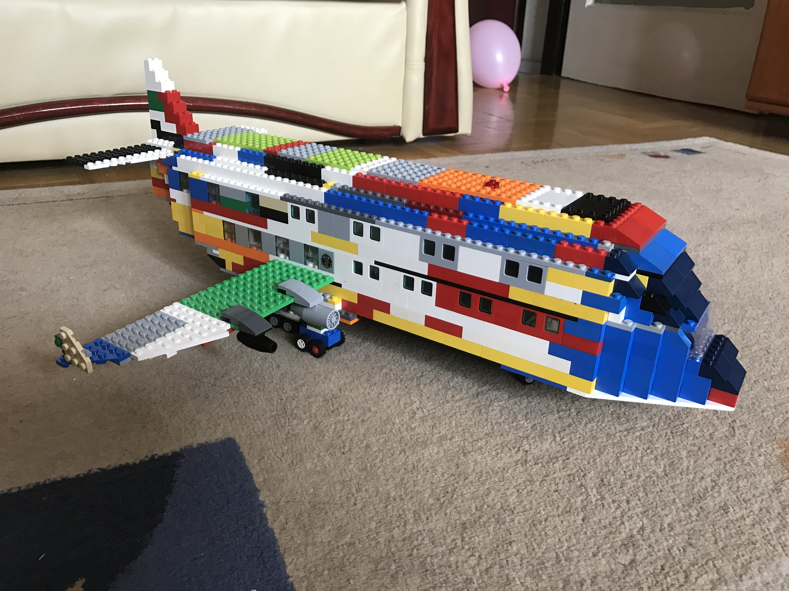

MALÉV, amit 6 évesen teljesen egyedül építettem
Lufthansa A380
Boeing 737

...és a behúzható futóművek
Emirates A380
brhúzott futóművekkel
...és kiengedett futóművekkel
QANTAS Boeing 777 éjszaka
Még egy A380-as
Antonov 225 - Mrija
és a kinyitható orr a rakodáshoz

Antonov 225 - Mrija - második változat
Az orra természetesen ennek is nyitható
Lego kiállítás - mi mást építettem volna? Egy újabb A380-as

Concord
Tupoljev-144
Tupoljev-154
Maradék legóból is lehet kisebb gépet építeni